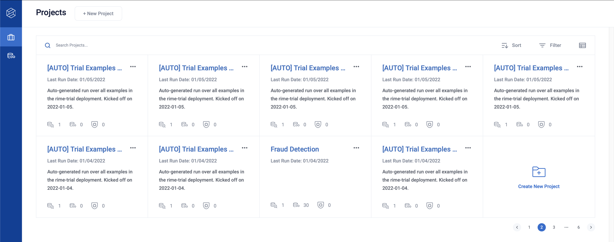
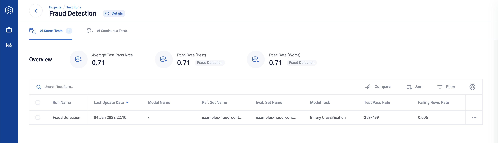
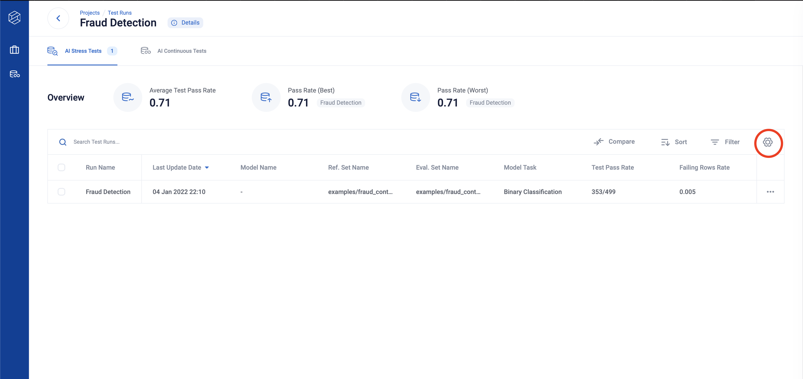
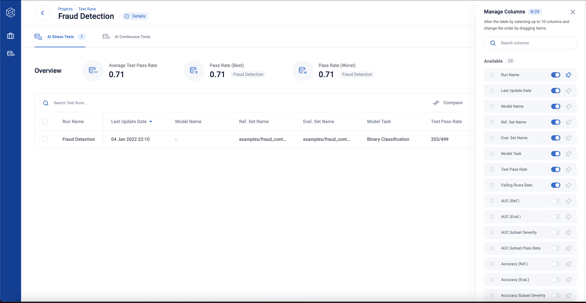
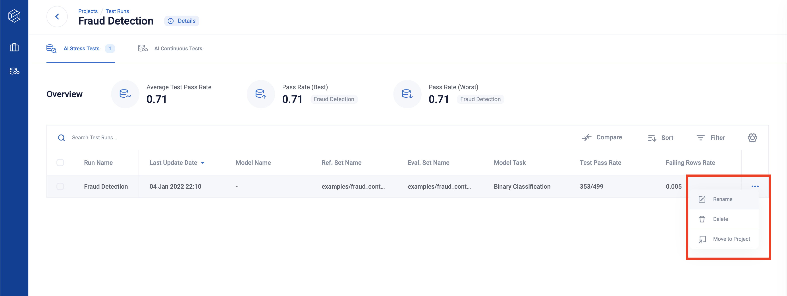
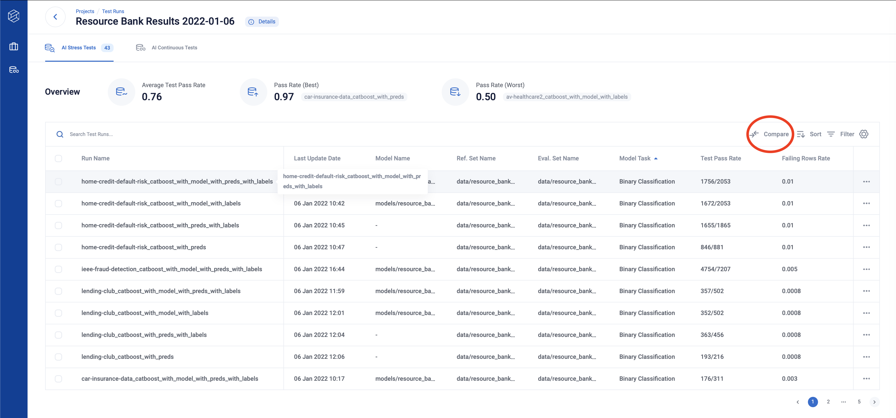
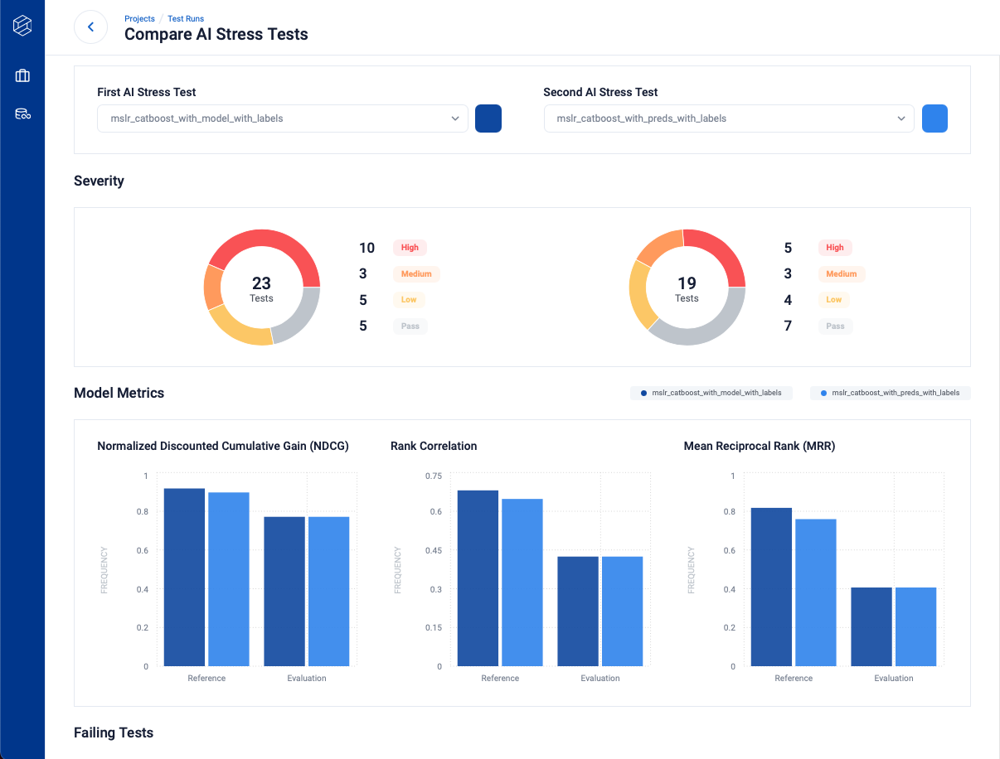

At this point, you should have your first working RIME run. Congratulations! You’re off to a very good start. Assuming you have the RIME backend running locally, you can navigate to the locally deployed projects page and follow along to the guided tour of the RIME UI below.
Projects
This page lists all projects created. Every test run initially belongs to the default project with project id 0. You can create other projects to help organize your various scenarios. Click on the row to see more information about the test runs in the default project.
You can create a new project through the [ + New Project ] button on top left.
Runs
This is an entry point to view different RIME test runs. Here, you can get a quick overview of each run and sort runs by clicking a column header.
You can compare test runs better through the columns manager, which you can toggle on by clicking the setting icon.
On the columns manager, you can toggle, order and pin the columns you are interested in.
You can also select test run(s) to rename, delete or move them to a different project by clicking on the three dots on the right-hand side of the row.
Click any row to see more detailed testing information about your latest run.
Tip: You can use Shift key + select for specifying the first and last item to multiple-select.
Side by Side Comparisons
Clicking on the “Compare” button on the top of the Test Run Table takes you to the Side by Side Comparison page.
You can compare eligible test runs from the project by selecting them from the dropdown.
